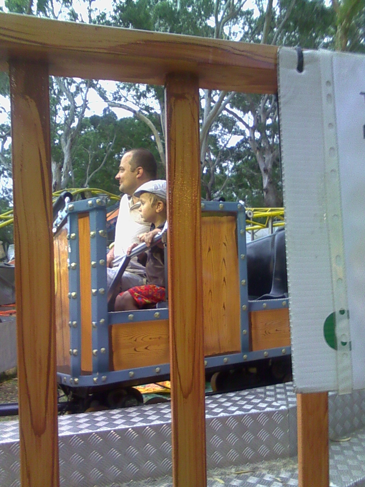
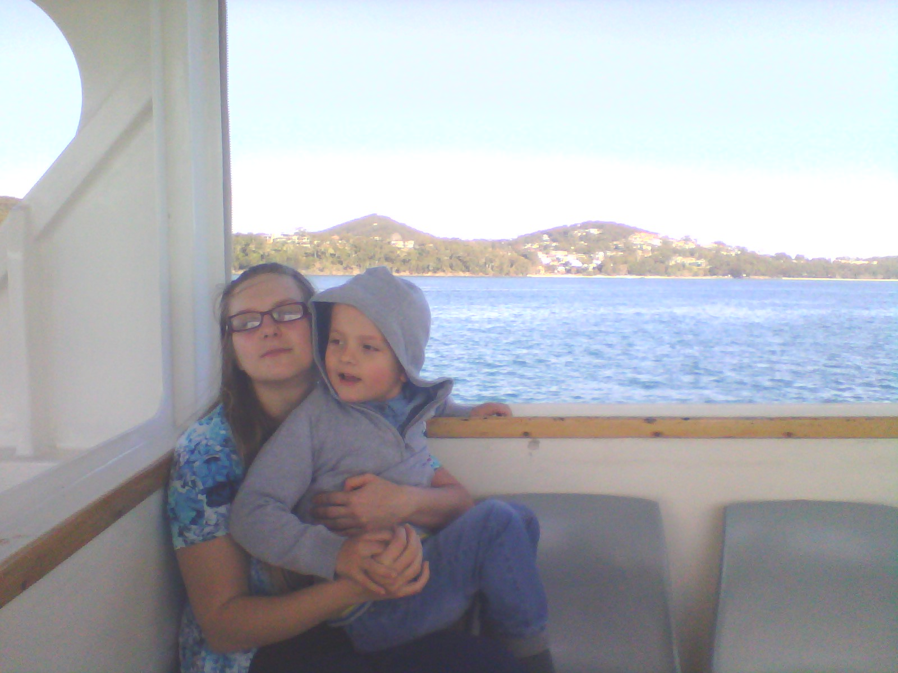

About the project


The site contains a few games which I created to play with front-end frameworks.
All games support responsive design, this means that it should be possible to play them
on any device type.
I'd like to devote this 'playground' to dear little Tolia - my son who is always happy having autism.
And to my beloved wife Daryna.
Cheers, Dzianis.